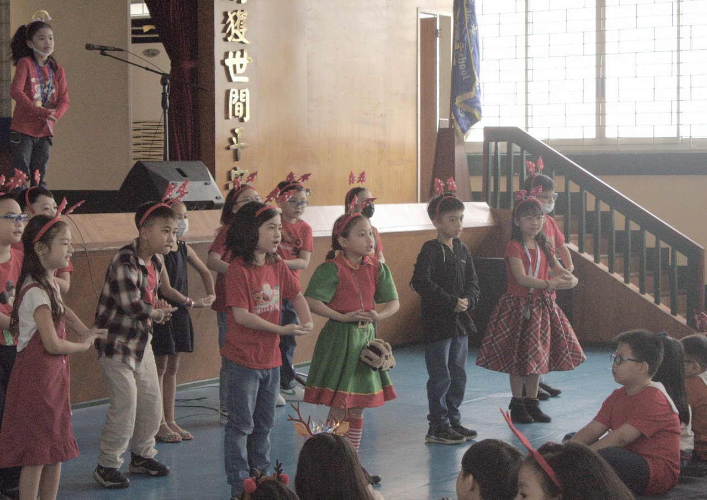
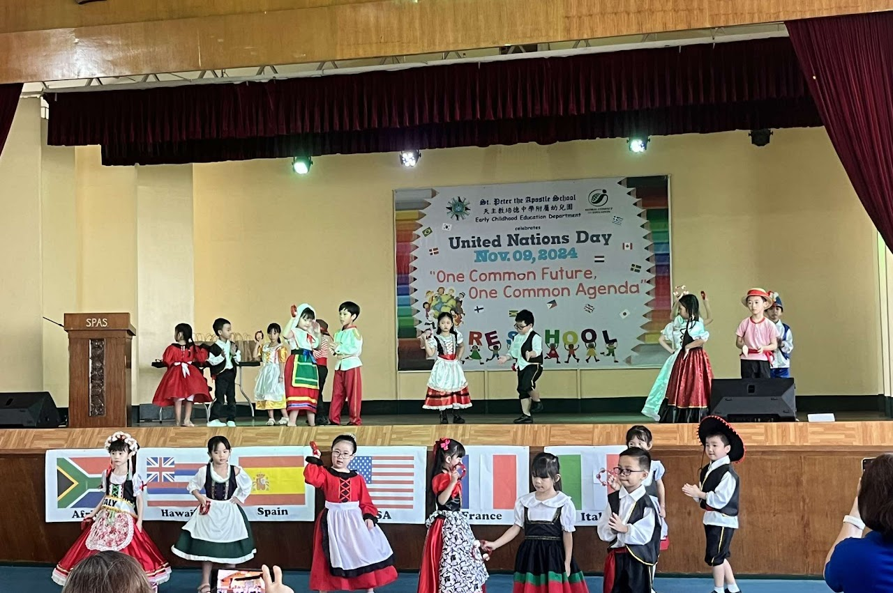

PETERLYMPICS
St. Peter the Apostle School recently held a two-day Peterlympics event (the annual SPAS Intramurals) on December 16–17, 2024, bringing together students from various grade levels to showcase their athleticism and strategic thinking in a wide range of sports. Parents and alumni had set up food and novelty item booths for the community to experience. The event started with a Celebration of the Word presided by our School Director, Rev. Fr. Emilio A. Ascaño, LRMS, PhD. It was then followed by the opening ceremony and the Mr. and Ms. Peterlympics contest where representatives of each batch showcased their athletic outfits with confidence. The school intramurals featured five main events: badminton, basketball, chess, table tennis, and volleyball, each attracting enthusiastic participants eager to demonstrate their talents and skills. Students were seen engaging in intense chess matches, where quick thinking and strategy ruled the day. The fast-paced table tennis and badminton games were filled with energy while the volleyball and basketball courts saw heated exchanges as teams vied for victory in thrilling matches. The event not only provided an outlet for friendly competition but also fostered a strong sense of camaraderie among the participants.
Throughout the two days, the atmosphere was electric, with students cheering on their peers and showing incredible school spirit. Peterlympics also allowed students to develop valuable skills like teamwork, sportsmanship, and discipline. Whether it was the strategic moves on the chessboard or the high-flying basketball dunks, the event was a success as everyone enjoyed regardless of their wins and losses.

KASPAKUHAN
St. Peter the Apostle School recently held a two-day Peterlympics event (the annual SPAS Intramurals) on December 16–17, 2024, bringing together students from various grade levels to showcase their athleticism and strategic thinking in a wide range of sports. Parents and alumni had set up food and novelty item booths for the community to experience. The event started with a Celebration of the Word presided by our School Director, Rev. Fr. Emilio A. Ascaño, LRMS, PhD. It was then followed by the opening ceremony and the Mr. and Ms. Peterlympics contest where representatives of each batch showcased their athletic outfits with confidence. The school intramurals featured five main events: badminton, basketball, chess, table tennis, and volleyball, each attracting enthusiastic participants eager to demonstrate their talents and skills. Students were seen engaging in intense chess matches, where quick thinking and strategy ruled the day. The fast-paced table tennis and badminton games were filled with energy while the volleyball and basketball courts saw heated exchanges as teams vied for victory in thrilling matches. The event not only provided an outlet for friendly competition but also fostered a strong sense of camaraderie among the participants.
Throughout the two days, the atmosphere was electric, with students cheering on their peers and showing incredible school spirit. Peterlympics also allowed students to develop valuable skills like teamwork, sportsmanship, and discipline. Whether it was the strategic moves on the chessboard or the high-flying basketball dunks, the event was a success as everyone enjoyed regardless of their wins and losses.

UN Celebration
The United Nations Day Celebration of the ECE department was an exciting day for the kids. Having practiced diligently for a month, they were very eager to wear their costumes and showcase their talents in dancing to their equally excited parents.
The festivity started with a parade from the ECE building to the main campus. Donned in their beautiful and colorful attires, the kindergarten students, together with their parents, paraded through the streets all the way to the gymnasium. Teachers and students from different levels warmly welcomed them with chants and cheers.
The presence of our school administrators, teachers, and officers from the SPAS Parents’ Auxiliary and SPAS Alumni Association made the event more fun and meaningful. Watching the kids dance and have fun was truly delightful, especially for their parents who were ardently taking pictures and videos of their children.
Garbed in their best costumes and accessories, selected candidates showed off their beautiful attire to the judges for the selection of Best in Costume, Best DIY costume, and Mr. & Ms. UN 2024 where the winners received prizes which made their day extra special.
Behind all the fanfare, the school hopes to impart to the children that celebrating United Nations Day also means celebrating and accepting different cultures despite the race and color as we come together as one for one purpose - peace.